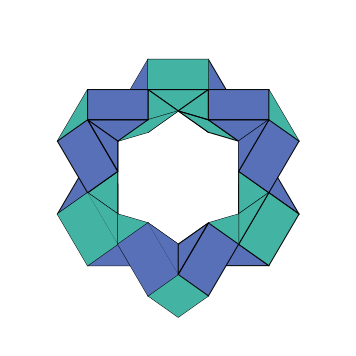

Die Notation der verschiedenen Drehungen von RUBIK's Snake basiert auf ein paar wenigen Regeln.
Es wird eine Ausgangslage (Referenzlage) definiert. Dabei schaut man die Bausteine so an, dass man deren Dreiecksform sieht. Die dunklen Bausteine (violett) liegen unten (die längste Dreiecksseite liegt unten), die hellen (grün) oben (die längste Dreiecksseite liegt oben). Der links liegende Baustein ist ein dunkler Baustein, der rechts außen auf dem Kopf liegende Baustein ist ein heller Baustein.
Anmerkung: Natürlich lässt sich der Farbbezug auch umgekehrt definieren, dabei ergeben sich dann Figuren mit vertauschten Farben.
Jeder dunkle Baustein erhält eine Nummer von 1 bis 12, wobei von links nach rechts gezählt wird. Der linksaußen liegende dunkle Baustein erhält also die Nummer 1, der rechtsaußen liegende dunkle Baustein die Nummmer 12.
Jeder dunkle Baustein hat eine rechte und eine linke Drehfläche (Seite), die mit den hellen Bausteinen verbunden ist (außer Baustein 1, der nur rechts mit einem hellen Baustein verbunden ist).
Die dunklen Bausteine verbleiben immer in ihrer Ausgangslage, zu mindestens gedanklich. An der linken und rechten Drehfläche (Seite) werden die hellen Bausteine gedreht. Dabei ergeben sich an jeder Seite vier Drehungen bis die Ausgangslage wieder erreicht ist. Die Ausgangslage wird nicht gesondert notiert, die an jeder Seite drei anderen Positionen werden mit 1, 2 und 3 durchnummeriert.
Die möglichen Drehungen und ihre Notationen sind im folgenden aufgelistet. Die Beschreibung jeder Drehung setzt sich aus drei Anteilen zusammen:
Baustein-Nummer: 1 bis 12
linke oder rechte Baustein-Seite: L oder R
Position der Drehung: 1, 2 oder 3
Notation Demonstration
Notation Beispiele
Schneeflocke
1R3-2L1-2R3-3L3-3R1-4L3-4R1-5L1-5R3-6L1-6R3-7L3-7R1-8L3-8R1-9L1-9R3-10L1-10R3-12L3-11R1-11L3-12R